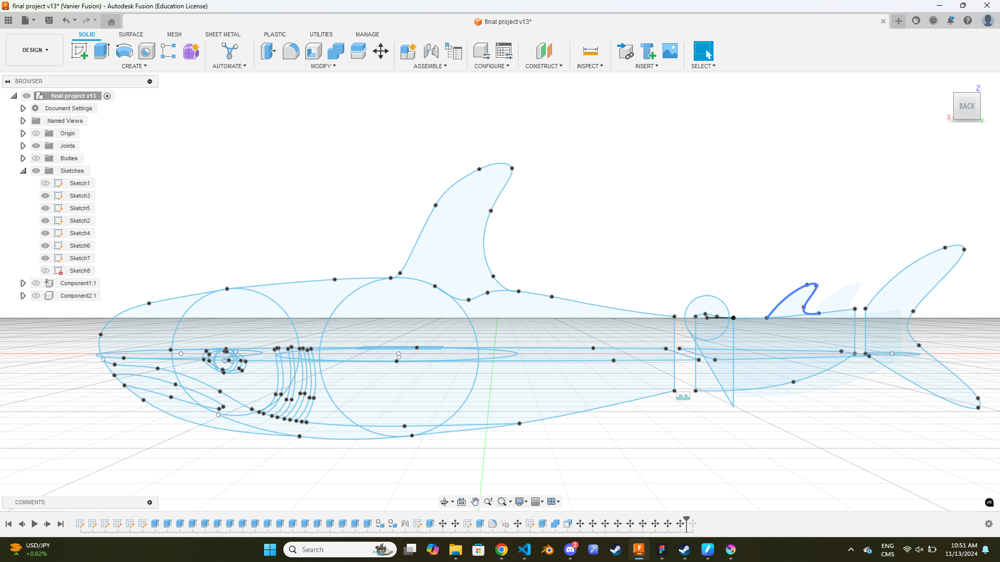
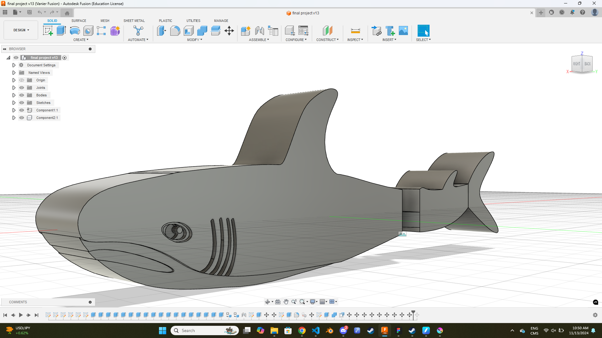
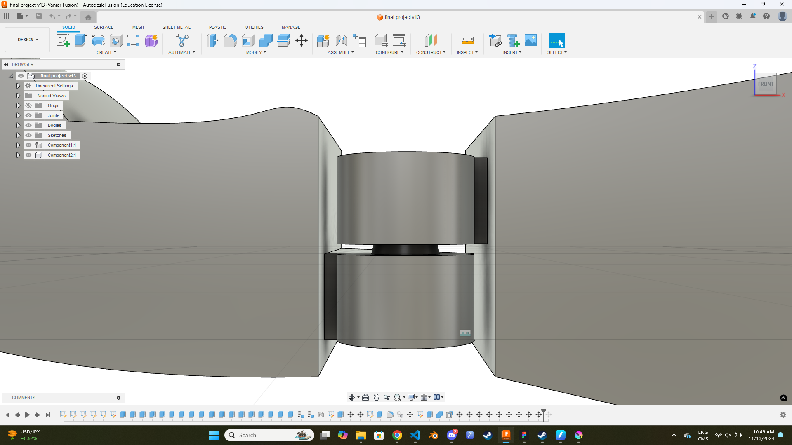

For our final project, I decided to create a small shark toy with a
moving tail.
The Prototype

Following the sketch and recreating it in fusion was very easy, I
planned out all the proportions in advance and it was incredibly
easy to simply type them in and have it look perfect.

Making the sketch into a solid was where things got a little bit
difficult, the biggest struggle I had was trying to smooth out the
angles, which I realized would be entirely impossible with how I had
done the sketch. But, I figured it would be better to have a flatter
toy that would still work than no toy at all.

The hinge proved to be the most difficult part of the model. I had
to figure out a way to flip the hinges so that the tail would move
left and right instead of up and down. Once I realized how to make
the first hinge, the second one was finished in no time and I was on
my way to printing it.